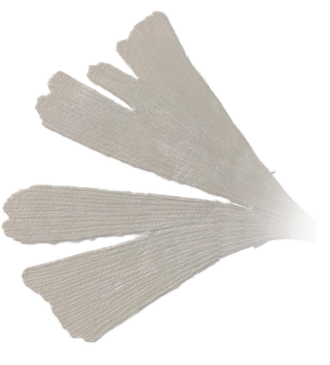

重度“案件迷”“恐怖故事密”
从小受到了柯南和电台的影响，所以喜欢看各种案件、看/听各种恐怖故事，也有好多推荐的。 如果胆子小可以跳过这一栏。


特别喜欢画画的人
这一点就不用多说了，这也是我坚持时间最长的爱好。以后也想边画画边旅游，希望可以实现。

还有一些其他的小爱好
1、玩游戏，最喜欢的就是Minecraft，在游戏界这是我的白月光。
2、一般我喜欢的球员有赛事的时候，就会看看球赛，感受感受竞技体育的魅力。
3、无聊的时候听听音乐，我喜欢的歌曲风格十分不稳定，没有特定风格，但我喜欢单曲循环。
4、偶尔自己剪一剪视频，看到自己剪辑的视频，会有一种说不出的满足感。
5、喜欢在乡间独自散步，感觉很放松。尤其是气温不冷不热的时候，去散步很舒服。
6、有时候会看看电影，很喜欢《玩具总动员》《疯狂动物城》
......


 浅棕绿眼睛疑似“外国人”
浅棕绿眼睛疑似“外国人” 手账本中找到三年前的银杏叶
手账本中找到三年前的银杏叶从小我眼睛就与身边的很多人不一样，我的眼睛不仅是浅棕色，而且还参杂着一些橄榄绿。我那时皮肤还很白（小学毕业照，我是我们班唯一个白到发光的，真的发光，整个头旁边还有白色光晕），头发也综黄的，所以我身边很多人都调侃我是“外国人”。小学初中的时候我在他们眼中就是“外国人”，到了高中以后就是“新疆人”或者“混血”了。但我真的是纯汉族人，我也经常跟他们开玩笑说我是“变异”了。



大一暑假在家里找初高中手帐本，然后仔细翻看。我找了好多充满回忆的东西，什么中考准考证、给自己的信之类的，不过这些我都记得。但我忘记了我高一时，在我们教学楼前面捡了一片银杏叶，我在手帐本中发现了它。
当我看到那片叶子，我感觉我仿佛看到了我当时的自己，以及我的母校，即使记忆模糊。我看到了我高中遍地的绿植，这让我联想到了我高中的文庙和古建筑。
细细回忆，高三元旦晚自习我们还趁老师开会，跑出去看浏阳河边的烟花，很美。一片普通不能再普通的银杏叶，却是我现在对高中三年的寄托，对我母校的回忆。